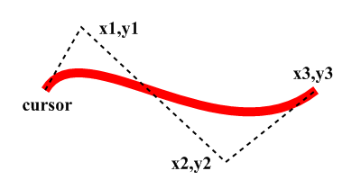

AddPathCurve()
Syntax
AddPathCurve(x1.d, y1.d, x2.d, y2.d, x3.d, y3.d [, Flags])Description
Adds a cubic bezier curve to the vector drawing path. The curve starts at the current path position and ends at (x3, y3). The other two points determine the shape of the curve.
Parameters
x1.d, y1.d The first control point of the curve. x2.d, y2.d The second control point of the curve. x3.d, y3.d The endpoint of the curve. This point will become the new path position. Flags (optional) Can be one of the following values: #PB_Path_Default : The positions are absolute (default) #PB_Path_Relative: The positions are relative to the last cursor position.
Return value
None.
Remarks
The below image shows the position of the reference points. See here for more information on bezier curves.
Example
If OpenWindow(0, 0, 0, 400, 200, "VectorDrawing", #PB_Window_SystemMenu | #PB_Window_ScreenCentered)
CanvasGadget(0, 0, 0, 400, 200)
If StartVectorDrawing(CanvasVectorOutput(0))
MovePathCursor(50, 100)
AddPathCurve(90, 30, 250, 180, 350, 100)
VectorSourceColor(RGBA(255, 0, 0, 255))
StrokePath(10)
StopVectorDrawing()
EndIf
Repeat
Event = WaitWindowEvent()
Until Event = #PB_Event_CloseWindow
EndIf
See Also
MovePathCursor(), AddPathLine(), AddPathArc(), AddPathCircle(), AddPathEllipse(), AddPathBox()
Supported OS
All